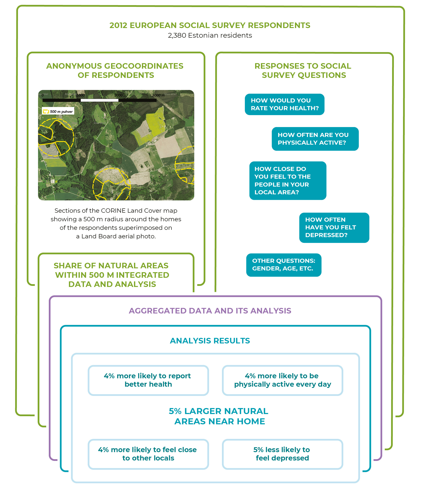
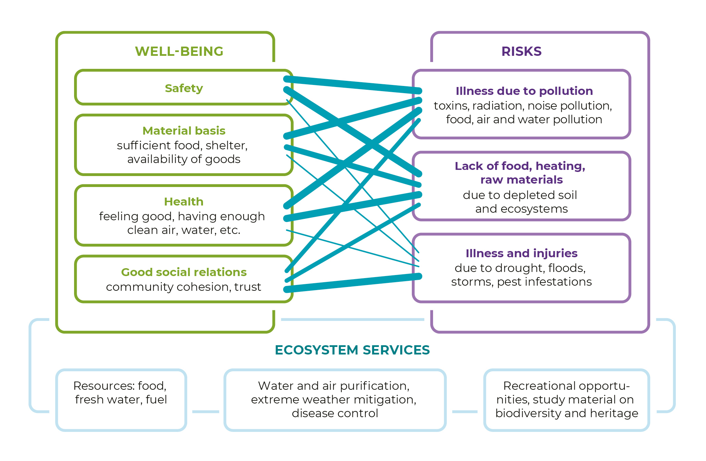
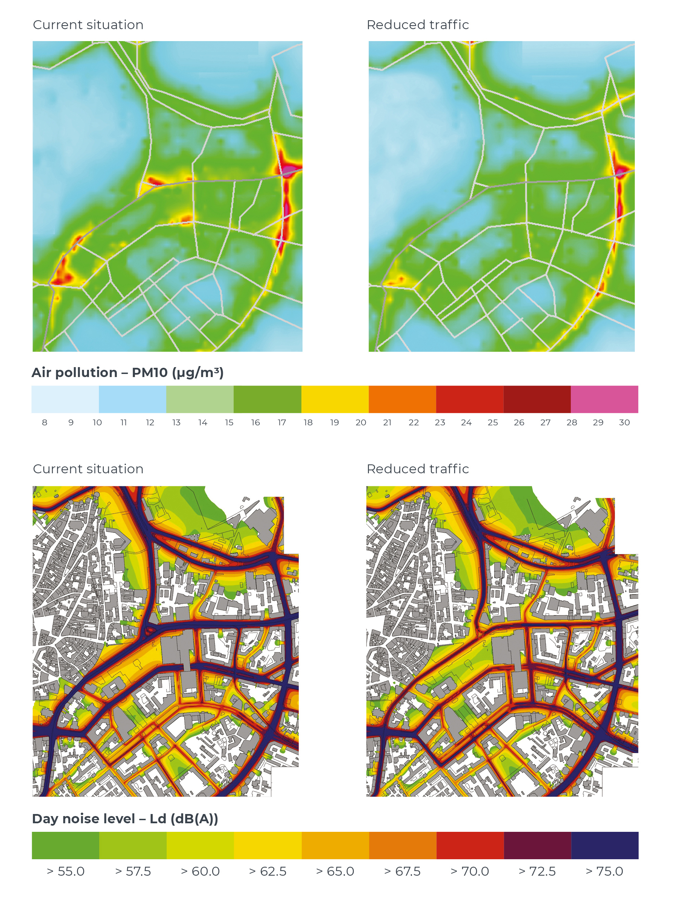

3.2 The impact of natural areas on people’s well-being
- Neighbourhood green spaces have a positive effect on the quality of life of Estonians, yet their health and social impact are not taken into account when designing public spaces.
Natural areas provide people with opportunities to be physically active, gain positive experiences and knowledge, and relax and recover spiritually. Landscapes and those parts of them that are open to the public have an important role in shaping culture, identity and creating a sense of belonging. For an urbanised population, these benefits may no longer be easily accessible. In addition to the direct health effects of a polluted living environment, an urbanising society is affected by a loss of experience in dealing with natural forces.
The clear health and well-being benefits of natural areas are not widely recognised in Estonia.
In this chapter, we will explore the relationships between neighbourhood green spaces and people’s mental and physical health, how this should be taken into account when designing natural areas and how to improve people’s ability to cope with unexpected natural events. As an aspect of environmental justice, the health benefits of having green spaces near home may have a proportionally greater impact on the more vulnerable (Chiabai et al. 2018), meaning that local public natural areas may help to narrow the gap between income groups in respect to health issues. The clear health and well-being benefits of natural areas are not widely recognised in Estonia. For example, according to a 2018 environmental awareness study among the Estonian population, the health benefits of forests were only acknowledged by 7% (Turu-uuringute AS 2018).
Previous European studies on the health impact of where people live, including those conducted in Estonia, confirm that air pollution is detrimental to human health and decreases life expectancy both in rural and urban areas (Orru et al. 2016b). When taking into account people’s social background and health status, even low levels of air pollution have a significant negative effect on perceived well-being. In other countries, it has been shown that people who live near natural areas have fewer respiratory and cardiovascular illnesses and mental health disorders, while also having a stronger immune system (WHO 2017). In these studies, the better health indicators have been explained, among other things, by the fact that the proximity of natural areas promotes people’s physical activity and creates an environment for communication. For example, children in the Netherlands that have at least 75 sq. m of green space per dwelling within a 500 m radius of their homes spend 15% more time playing outside, which amounts to an average of 1.5 extra hours per week (www.kpmg.nl).
The relationship between the size of natural areas and the self-reported health of Estonian adults
Generally, Estonian settlements have good access to green spaces. In 2013, 57% of the inhabitants of small and medium-sized urban areas lived within walking distance (400 m) of green spaces (Roose et al. 2013). The authors of this article studied the impact of the size of the natural areas within a 500 m radius of people’s homes on those people’s self-reported health, depression, physical activity and connectedness to other locals. We used a representative sample of the social and health factors of 2,380 Estonian adults from the 2012 European Social Survey. To describe their home neighbourhoods, we used the coordinates of their places of residence and the European Environment Agency’s CORINE Land Cover map (https://land.copernicus.eu/pan-european/corine-land-cover) from 2000, which has also been used in other academic studies to describe the overlap between the individuals’ activity spaces and nature. We saw (Figure 3.2.1) that an increase of just 5% in the size of natural areas came with an average increase of 4% in the odds of assessing one’s health as good (odds ratio of 1.01–1.07 with a 95% confidence level), feeling connected to other local residents (1.01–1.06) and being physically active (1.01–1.06). The latter may help to manage cardiovascular disease. The odds of feeling depressed fell by 5% (0.94–0.98), confirming the findings of research conducted in other parts of the world on the potentially stress-relieving effects of natural areas.
We also checked the relationships separately for:
- Tallinn and Tartu, where green spaces accounted for an average of 8.5% of the total urban area; and
- smaller cities, suburbs and rural areas that had more natural areas (17.7% on average).
We found the relationship between the size of green spaces and all well-being and health indicators only existed in smaller cities and rural areas. In Tallinn and Tartu, while people who lived near green spaces gave better assessments of their health and were more likely to feel connected to other local residents, there was no clear relationship between physical activity and the development or prevention of the symptoms of depression. This kind of relationship between the proximity of green spaces and people’s physical activity and the symptoms of depression is confirmed by studies in other cities of the world (Barton et al. 2016; 2017). The weak relationship in the Estonian analysis may be due to the data being based on people’s self-assessments, which may not fully overlap with their objective physical activity levels or indicators of psychological health. Further studies are needed to clarify these relationships and regional differences as well as specify the causal links in connection with the size of natural areas. For example, alternative opportunities to exercise or going to a holiday house in the countryside or visiting natural environments may reduce the importance of green spaces in the physical activity habits of residents in larger cities. Opportunities for engaging in physical activity probably also depend on the quality of planning (whether it is noise-free) and level of upkeep of parks or green spaces.
Figure 3.2.1. The analysis and results of the size of neighbourhood natural areas and indicators of well-being and health

Source: CORINE 2000; European Social Survey 2012.
The health benefits of natural areas are not sufficiently taken into account during planning
The benefits associated with natural areas are measured by the number of premature deaths, cases of illness and hospitalisations prevented, and the amount of unspent budget by the health insurance fund.
The benefits associated with natural areas are measured by the number of premature deaths, cases of illness and hospitalisations prevented and the amount of unspent budget by the health insurance fund. These outcomes are shaped by how natural areas affect people in the form of ecosystem services or benefits: such as the absorption and purification of flood waters, movement corridors within settlements or opportunities to interact with local nature (Figure 3.2.2). The impact of natural areas is in turn defined by the characteristics of the ecosystem. For example, green spaces with broadleaved trees are particularly valuable for alleviating the urban heat island effect, while coniferous trees, trees with more complex leaf structures or combinations of species on green walls are better at capturing air pollution (Chiabai et al. 2018).
Figure 3.2.2. Ecosystem services shape the functioning of public natural areas as a source of human well-being and risk

Source: Figure by the authors.
Ensuring ecosystem functions is most challenging in densely populated areas where there is competition for space. Different cities around the world have tried to find multifunctional nature-based spatial solutions for decreasing pollution and noise in the urban centre and promoting active travel. A well-known example is Cheonggyecheon in Seoul, where the drained riverbed that had been made into a motorway was reconverted into a green recreation area in 2005. Estonia, too, has good examples of creating living environments and opportunities for active travel: beach promenades in Pärnu (2006) and Haapsalu (2010), and connecting the Raadi manor grounds with Tartu city centre (2016).
The health benefits of spatial planning are assessed using a methodology where the change in health effects is projected on the basis of the relationship between current and future exposure to environmental factors and their health effects (dose–response relationship), and the change in exposure or physical activity. To this end, levels of air pollution, noise or other such environmental factors are measured or modelled (current situation), followed by the creation of various models of future scenarios. Then, current levels of morbidity or mortality are used as a basis for projecting any change in future levels of morbidity or mortality among the population using the dose–response relationship (e.g. what is the change in mortality per microgram of a pollutant unit).
This methodology has already been implemented in Estonia; for example, when analysing the best solution in the 2016 architectural design competition for Tallinn’s Main Street project, where the extent to which increasing green spaces and limiting traffic in the city centre of Tallinn would reduce noise and improve air quality was assessed (Figure 3.2.3). Currently, air pollution and noise in this area cause an estimated 30 premature deaths per year. If there were just one lane in each direction along with a bus lane at the top of Pärnu maantee and Narva maantee, the number of premature deaths in the city centre of Tallinn would drop by approximately 4% per year, largely due to a reduction in the amount of exhaust fumes, but also of road dust and noise (Orru et al. 2016a). Reduced levels of noise and pollution make people more willing to spend time on the streets, which in turn has a positive effect on the physical activity levels of the population. A pedestrian count along with an interpretation of Google Street View images showed that there were approximately 6,000 pedestrians per day on the Main Street, with an average physically active time of 15 minutes. This kind of activity level prevents an average of three premature deaths per year.
Health benefits or health damage measured like this can also be calculated in monetary terms. For example, it has been calculated that the green spaces in London city centre reduce health damage and costs to the United Kingdom’s health insurance fund by an estimated 1.82 million pounds (Natural England). Netherlands by 10% from the current 13.9% of the country’s territory would help prevent approximately 84,000 visits to the family doctor and save the health insurance fund 65 million euros per year (www.kpmg.nl).
Figure 3.2.3. Tallinn’s annual average concentration (μg/m3) of particulate matter (PM10) and noise levels (dB(A)) during the day (Ld 7.00–23.00)

Source: Orru et al. 2016a.
The buffering capacity of natural areas is weakening
Green spaces help to buffer the risks posed to human well-being by climate change, which are expected to increase in Estonia due to forest fires, torrential rains and storm damage. Green spaces catch excess rain water, reduce the devastating effects of storm winds, alleviate the urban heat island effect and have other benefits (Demuzere et al. 2014). Health risks are also increased during hot days when the average daily temperature does not fall below 21 degrees. Between 1980 and 2015, the number of premature deaths associated with heat increased 2.4 times, particularly among people with chronic diseases, the elderly, and those living in eastern and central Estonia (Orru et al. 2018). In order to limit these risks, it is important for settlements to have both green spaces (with trees) and bodies of water, but the pressure to reduce these kinds of areas is significant in Estonia due to a high degree of interest in development and fragmentary planning methods (Poom and Sepp, this report).
Green spaces catch excess rain water, reduce the devastating effects of storm winds, alleviate the urban heat island effect and have other benefits.
In addition to the accessibility of natural areas, the feeling of stability and safety gained from experiences in nature is also important for the ability to cope with environmental changes and extreme weather conditions (Clayton et al. 2017). The complex links between environmental problems and well-being and health are easier to understand for people who are exposed to these issues through where they live or as part of their work. A comparison of European countries shows that environmental protection has become more valued in places where people have already experienced heat waves in cities or wildfires (Orru and Lilleoja 2015). Estonia is not among these places and environmental protection has tended to become less valued. A recent survey by Kantar Emor showed that two-thirds of respondents in Estonia considered that emergencies caused by extreme weather conditions are likely, while 40% considered that emergencies caused by large-scale forest fires and wildfires are likely, but just 51% and 25% of respondents, respectively, were sure of their ability to cope with these emergencies (Kantar Emor 2017).
Social groups lacking the skills to cope in nature and with a geographically limited support network are more worried about their vulnerability in the face of environmental changes. In Estonia, these mostly include urban residents and the Russian-speaking population (Orru et al. 2018). People in rural areas are more used to inconveniences caused by natural forces (such as power cuts) and are better prepared to get by with their own food and heating sources for a brief period. To maintain a similar level of preparedness in cities, it is important that public spaces enable people to experience nature.
Education is key to unlocking the potential of natural areas
Fewer nature experiences lead to a narrowed comfort zone, particularly for young people. Although young people may have a good theoretical knowledge of nature (according to OECD education statistics on the 2017 PISA results, the level of life sciences knowledge among Estonian students is 3rd among the countries of the world), practical nature experiences are diminishing. Young people’s exposure to virtual environments exceeds their time spent in nature many times over and they prefer environments that they can control (Davis 2014). Yet playtime in nature, driven by curiosity and a sense of discovery, is vital for the normal development of risk perception in children. It also increases creativity and reasoning skills as well as improving adaptability to unexpected situations (Clayton et al. 2017). Community gardens, which are also becoming popular in Estonia, are an example of people’s efforts to maintain a connection to nature in urban environments. The relaxation from gardening, interactions between people of different communities and generations, and the sharing of gardening experiences made possible by these gardens are often considered greater benefits than the horticultural products themselves (Kangur 2018).
75% of young people highly value opportunities to spend time in natural environments. Half of the respondents, particularly minors, reported feeling fearful – particularly of getting lost in the forest, but also of feeling disgusted by insects and other animals.
An online survey explored the emotions associated with the nature experiences of the Estonian Generation Y (Saar 2015). It turned out that 75% of young people highly value opportunities to spend time in natural environments. The young people surveyed said they appreciated the sense of relaxation that comes with spending time in nature, either alone or with others, or from physical exertion. However, half of the respondents reported feeling fearful – particularly of getting lost in the forest, but also of feeling disgusted by insects and other critters. These negative emotions are associated with urbanisation (alienation) and become less prevalent with age, as experiences are gained and the capacity for control increases.
Summary
Easy access to diverse natural areas offers Estonians better opportunities to relax and improve their health. It helps to reduce health inequalities resulting from social background or financial status. Green spaces also encourage social interaction and can therefore potentially help in reducing segregation among different social groups, which is of critical importance in Estonia’s densely populated areas and suburbs. As there is increasing pressure to use natural areas for the construction of roads and other infrastructure, the health and well-being functions of natural areas should be explored more systematically and comprehensively when planning settlements. At present, the opportunities to conduct impact studies with a focus on health and well-being have not been sufficiently exploited when planning Estonian public spaces and natural areas. Objectives regarding the accessibility and quality of natural areas should be clearly defined in national development plans, such as the 2021–2030 development plan for transport and mobility, as well as in local government development plans, such as the Tallinn Development Plan 2021+.
Although urbanisation is limiting people’s exposure to the natural environment, the changing natural world demands our attention. Given the projected increase in extreme weather phenomena in Estonia, improved access to green spaces would help to reduce the risk to people’s well-being and health posed by floods, storms and heat. Restoring people’s relationship to the environment through nature education is one important way of realising the health and well-being benefits provided by natural areas and responding to the need to ensure that these benefits are maintained. This cannot be achieved solely through structured visits to nature provided by nature education centres and hiking trails – in order to maintain their physical and mental health, people also need free access to natural areas in cities. One of the most important courses of action to take in Estonia would be to make natural areas easily accessible to children in the cities and towns.
References
Barton, J., Bragg, R., Wood, C., Pretty, J. 2016. Green Exercise: Linking Nature, Health and Well-Being. London: Routledge.
Barton, J., Rogerson, M. 2017. The importance of greenspace for mental health. – The British Journal of Psychiatry, 14 (4), 79–81.
Chiabai, A., Quigora, S., Martinez-Juarez, P., Higgins, S., Taylor, T. 2018. The nexus between climate change, ecosystem services and human health: towards a conceptual framework. – Science of the Total Environment, 635, 1191−1204.
Clayton, S., Manning, C. M., Krygsman, K., Speiser, M. 2017. Mental Health and Our Changing Climate: Impacts, Implications, and Guidance. Washington: American Psychological Association, ecoAmerica.
Davis, J. (ed.) 2014. Young Children and the Environment: Early Education for Sustainability. Cambridge: Cambridge University Press.
Demuzere, M., Orru, K., Heidrich, O., Olazabal, E., Geneletti, D., Orru, H., Bhave, A. G., Mittal, N., Feliu, E., Faehnle, M. 2014. Mitigating and adapting to climate change: multi-functional and multi-scale assessment of green urban infrastructure. – Journal of Environmental Management, 146, 107–115.
European Social Survey (ESS) Round 6 2012. europeansocialsurvey.org/data/download.html?r=6.
Kangur, L. 2018. Linnaaiandus kui sotsiaalne praktika: Tartu noorte näitel. MA thesis. Estonian University of Life Sciences.
Kantar Emor 2017. Elanikkonna hädaolukorraks valmisoleku alase teadlikkuse indeksuuring 2017.
Orru, H., Kaasik, M., Pindus, M., Tamm, T., Kärbla, V. 2016a. Tallinna kesklinna ja Vanasadama vahelise liikumisruumi õhusaaste ja müra muutuste modelleerimine Tallinna uue peatänava rajamisel ning sellest tulenevate tervisemõjude vähenemise hindamine. Tartu Ülikool: Peremeditsiini ja Rahvatervishoiu Instituut.
Orru, K., Lilleoja, L. 2015. Contextual drivers of environmental values cross-culturally: evidence from Europe between 2004 and 2012. – Studies of Transition States and Societies, 7 (3), 38−51.
Orru, K., Orru, H., Maasikmets, M., Hendrikson, R., Ainsaar, M. 2016b. Well-being and environmental quality: does pollution affect life satisfaction? – Quality of Life Research, 25 (3), 699−705.
Orru, K., Tillmann, M., Ebi, K. L., Orru, H. 2018. Making administrative systems adaptive to emerging climate change-related health effects: case of Estonia. – Atmosphere, 9 (6), 221−240.
Roose, A., Kull, A., Gauk, M., Tali, T. 2013. Land use policy shocks in the post-communist urban fringe: a case study of Estonia. – Land Use Policy, 30 (1), 76–83.
Saar, T. 2015. Loodus on hirmutav ja ebamugav: Y-generatsiooni kogemused looduses. MA thesis. Estonian University of Life Sciences.
Turu-uuringute AS 2018. Eesti elanike keskkonnateadlikkuse uuring.
WHO – World Health Organization 2017. Urban Green Space Interventions and Health. A Review of Impacts and Effectiveness. Copenhagen: WHO Regional Office for Europe.
Note: The odds are calculated using logistic regression models that take into account gender, age, years of education and the perceived adequacy of current levels of income. People assessed their health on a scale of 1 to 5, where values between 4 and 5 were converted to ‘good’. Physical activity for at least 20 minutes over the past 7 days was assessed on a scale of 1 to 8 (8 = daily). A statement about feeling connected to other local residents was assessed on a scale of 1 to 5, where 1 was ‘completely agree’ and 5 was ‘completely disagree’ (values 1 and 2 were converted to ‘agree’). Feelings of depression during the past week were measured on a scale of 1 to 4, with a focus on the value 1 (‘never’).